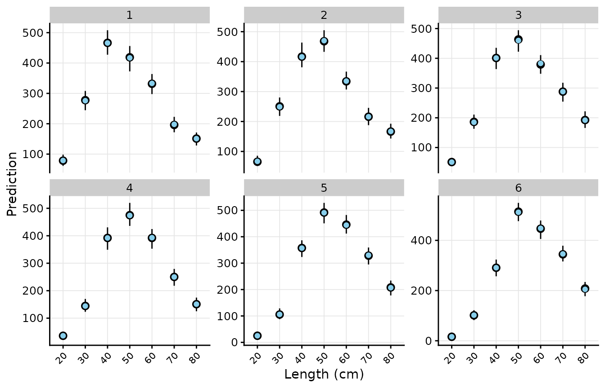
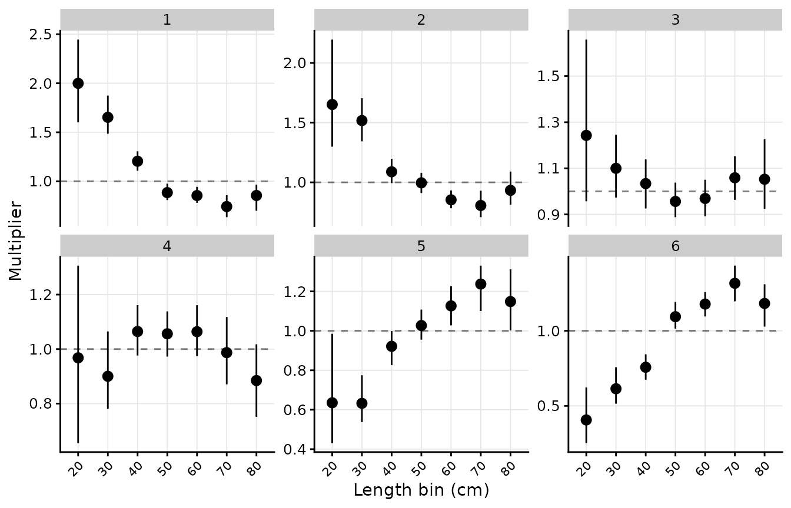
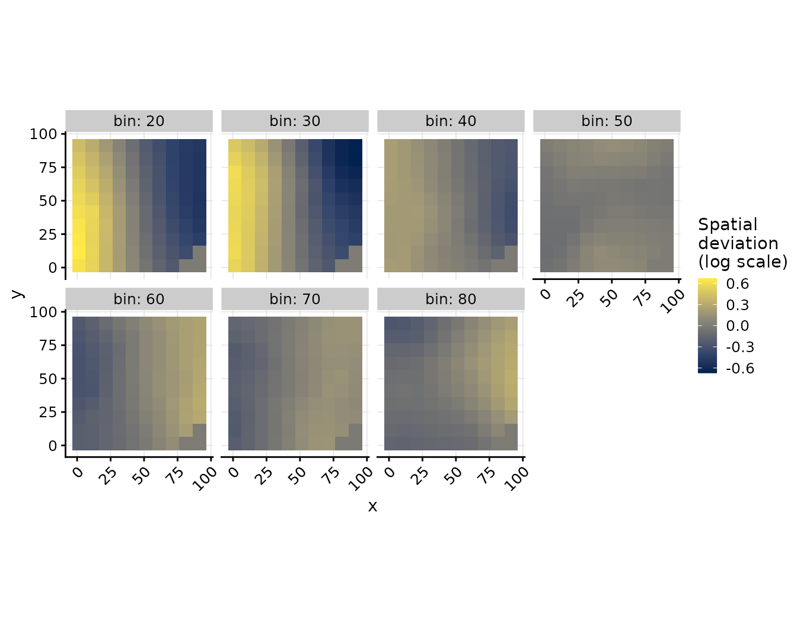
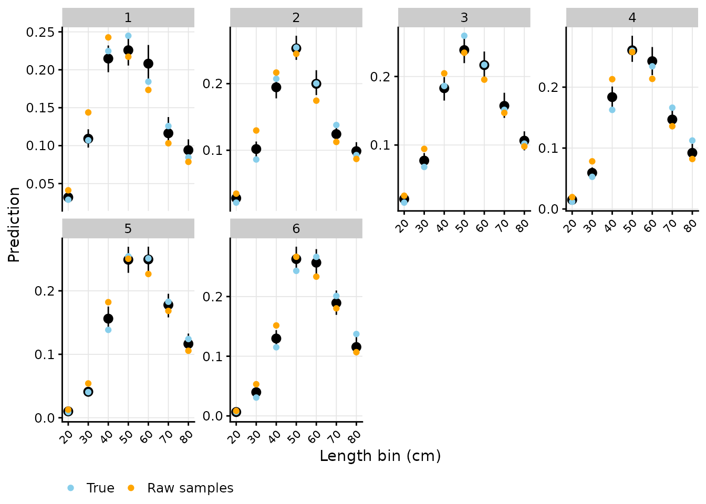

ComPoM fits Poisson-multinomial models to compositional count data, such as length or age frequencies from observer or market sampling. The fitted model predicts the composition for each stratum of a fishery with known catch. The predicted compositions are then weighted by catch and aggregated, giving catch-weighted compositions that are standardised for the uneven distribution of sampling across strata.
This vignette describes the model in its basic (non-spatial) and
spatio-temporal forms, the wrapper functions and the order in which they
are used, and an example with simulated data. The vignettes
vessel_bias_simulation and
spatial_bias_simulation contain longer simulation studies
for vessel-level and spatial sampling bias.
Model
Data and notation
The data are counts of sampled individuals by bin
(e.g. 10 cm length classes) and sampling stratum
.
A stratum is a unique combination of the grouping variables passed to
data_prep(), for example year, season, vessel and location.
The notation is:
- , the number of individuals in bin in stratum ;
- , the total number of individuals sampled in stratum ;
- , the level of the -th factor of primary interest (e.g. year) in stratum ;
- , the level of the -th nuisance factor (e.g. season, vessel) in stratum ;
- , the value of a continuous covariate (e.g. sea-surface temperature) in stratum ;
- and , the location and time step of stratum (spatial models only).
data_prep() adds zero counts for bins that were not
observed in a stratum, so that each stratum has
rows.
Basic model
Counts are modelled as Poisson, with the log of the stratum sample size as offset:
Conditional on the stratum total, independent Poisson counts are multinomial (Baker 1994):
The proportions therefore follow a multinomial-logit model, and every term in is specific to the bin. Terms that are constant across bins within a stratum cancel from and are not included. The linear predictor is
with the following components.
-
is the bin-specific intercept (formula term
0 + bin). -
is the bin-specific fixed effect of level
of factor
(
factor(Year):bin, specified viaffx_form). The first level of each factor is the reference, . -
is an independent random effect for each combination of bin and level
of nuisance factor
(
(1|bin:Season), specified viare_form). One variance is estimated per nuisance factor. -
is a smooth effect of a continuous covariate (
cvars). Three forms are available throughspl. Withspl = "2D", is a tensor-product smooth (t2(c, cbin)) over the covariate and the numeric bin value , which requires ordered numeric bins. Withspl = "by_factor", is a separate one-dimensional smooth for each bin (s(c, by = bin)), which also applies to unordered categories such as species. The optionspl = "by"is a legacy variant of the per-bin smooth.
The model contains no free intercept per stratum. The expected stratum total is therefore and equals only on average over the strata within each level of the fixed-effect factors. The model with a free stratum intercept would reproduce the multinomial likelihood exactly but would add one parameter per stratum. All downstream summaries in ComPoM are normalised to proportions, or use as a proportion (see below).
The nuisance factors are treated as random effects because their levels are not of interest for the output and are often unbalanced (e.g. vessels that were sampled in only one year). Factors of interest, such as year, are treated as fixed effects so that they are not shrunk towards a common mean.
Spatio-temporal model
With the sdmTMB backend and a mesh, the linear predictor is extended by bin-specific Gaussian random fields (Anderson et al. 2025):
- is a spatial field for bin , constant over time. It describes persistent spatial differences in the relative abundance of the bin, for example size segregation by depth or region.
- is a spatio-temporal field for bin in time step . It describes spatial patterns that differ between time steps.
All fields have mean zero and a Matérn covariance, approximated by
the stochastic partial differential equation (SPDE) approach on the
supplied mesh (Lindgren et al. 2011). Fields are independent across bins
and, for
,
across time steps. By default all spatial fields share one standard
deviation
and all spatio-temporal fields share one standard deviation
(share_spatial_sd = TRUE,
share_spatiotemporal_sd = TRUE). Setting either argument to
FALSE estimates a separate standard deviation per bin or
per bin and time step. The fields are set up with
sdmTMB::make_category_svc() as spatially varying
coefficients on bin and bin-by-time indicator variables.
The spatial model accounts for sampling that is spatially uneven relative to the catch. Spatial differences in composition are attributed to the fields rather than to the fixed effects, and the predictions for unsampled locations borrow information from neighbouring sampled locations.
Estimation and uncertainty
With backend = "brms", the model is fitted by
Hamiltonian Monte Carlo in Stan via brms (Bürkner 2017), with a
Student-t(10, 0, 1) prior on the fixed effects. Uncertainty in all
downstream quantities is propagated through the posterior draws.
With backend = "TMB", the model is fitted by maximum
likelihood via sdmTMB, with random effects and fields integrated out by
the Laplace approximation. Downstream functions draw
samples of the fixed and random effects from their joint approximate
sampling distribution, and uncertainty is propagated through these
draws.
Scaling to catch
The model is used to predict the composition in strata
with a known weight
.
scale_comps() predicts the numbers-at-bin for each draw
as
that is, with the offset set to zero and the predicted rates multiplied by the weight. Weighted compositions for a group of strata (e.g. a year) are then obtained by summing and normalising:
This is the computation in scaled_comp_plot() and
scaled_ridge_plot(). The weight of each stratum in
is proportional to
,
which equals
when the predicted proportions sum to one.
scale_comps() supports two uses, selected by
mode.
- Catch weighting (
mode = "catch", default) estimates the composition of the total catch of the full fleet. The strata are all combinations of the model variables in the catch records (e.g. year, season, vessel and location), and is the catch. All model terms, including the nuisance random effects, are evaluated at the values of each stratum. Every nuisance variable must therefore be ingrps. - Index mode (
mode = "index") estimates the composition of the population that a CPUE index describes, predicted as the index would be. Catchability terms, such as fleet or gear, are set to a reference (catchability,reference), and nuisance random effects to the population level. All other terms are predicted at the values in a prediction grid (grid): one row per index time step for a non-spatial model, and one row per cell and time step for a spatial model, with the coordinates and the density covariates. is a weight per grid row, which can come from a separate CPUE or abundance model (weight) and is equal for all rows otherwise. Every fixed-effect variable and covariate of the model is either a catchability term or a column of the grid, so that the role of each term is chosen by the user.
In both modes, spatial and spatio-temporal fields are evaluated at the coordinates in the data frame supplied, and continuous covariates at their mean within each stratum or cell. Setting a covariate to a reference value in that data frame standardises the compositions to that value.
Nuisance levels that were not in the fitted data, such as unsampled
vessels, are handled differently by the two backends. brms uses, in each
draw, the posterior draw of a randomly chosen fitted level
(sample_new_levels = "uncertainty"). sdmTMB predicts these
strata at the population level of all nuisance random effects and issues
a warning.
Wrapper functions
| Step | Function | Purpose |
|---|---|---|
| 1 | data_prep() |
Aggregate counts to strata by bin, add zero counts and stratum totals |
| 2 | fit_model() |
Build the formula (via parse_form()) and
fit with brms or sdmTMB |
| 3 | post_pred_group() |
Posterior predictive check of compositions by group
(needs add_preds = TRUE) |
| 3 | Fx_plot() |
Bin-specific effects of a factor, as multipliers relative to the geometric mean |
| 3 | cvar_smooth_plot() |
Smooth effect of a continuous covariate by bin |
| 3 | spatial_field_plot() |
Spatial field by bin (spatial sdmTMB fits) |
| 4 | scale_comps() |
Predict numbers-at-bin draws for strata with known catch or CPUE |
| 4 |
scaled_comp_plot(),
scaled_ridge_plot()
|
Aggregate scaled draws to compositions and plot them |
Table 1 lists the functions in the order in which they are used.
fit_model() returns an object of class ComPoM
that holds the fitted model, the model data and the settings needed by
the downstream functions, so that the steps after fitting only require
the fit and, for scaling, the catch data.
A typical analysis progresses through increasingly complex models:
- a non-spatial model with the factor of interest as fixed effect
(
ffx_form = "Year"); - nuisance sampling factors added as random effects
(
re_form = "Season + Vessel"); - continuous covariates added as smooths (
cvars,spl,knots); - spatial and spatio-temporal fields added
(
backend = "TMB",mesh,time,coords).
The sdmTMB backend fits these models in seconds to minutes and is suited to model development and comparison (e.g. by AIC). The brms backend gives full posterior inference and admits priors on all parameters, but takes longer to fit and does not support spatial fields in ComPoM.
Example
The example used simulated length compositions with seven 10 cm bins (20 to 80 cm), six years, two seasons and 60 sampling locations. The selectivity-at-length was logistic. Its 50% length increased by 2 cm per year, was 4 cm higher in season 2, and increased from west to east by 0.15 cm per unit of . The logistic slope parameter was 5 cm, and availability decreased with length as . Smaller fish were therefore caught in the west. Sampling was biased towards the west and towards season 1. Forty percent of the location-year-season combinations were sampled, with selection probabilities proportional to and doubled in season 1. Each sample contained 40 fish.
library(ComPoM)
library(dplyr)
library(tidyr)
library(sdmTMB)
library(ggplot2)
set.seed(1)
bins <- seq(20, 80, by = 10)
sel <- function(L, L50) 1 / (1 + exp(-(L - L50) / 5))
avail <- exp(-0.04 * (bins - 20))
locs <- tibble(loc = 1:60, x = runif(60, 0, 100), y = runif(60, 0, 100))
comp <- expand_grid(loc = 1:60, Year = 1:6, Season = 1:2) |>
left_join(locs, by = "loc") |>
slice_sample(prop = 0.4, weight_by = exp(-x / 25) * ifelse(Season == 1, 2, 1)) |>
rowwise() |>
mutate(
L50 = 40 + 2 * (Year - 3) + 4 * (Season == 2) + 0.15 * (x - 50),
p = list(sel(bins, L50) * avail / sum(sel(bins, L50) * avail)),
count = list(as.vector(rmultinom(1, 40, p)))
) |>
ungroup() |>
mutate(bin = list(bins), Year = factor(Year), Season = factor(Season)) |>
select(loc, Year, Season, x, y, bin, count) |>
unnest(c(bin, count))Data preparation
All variables used in any later model, including coordinates, were passed as grouping variables.
dat <- data_prep(
comp,
vars_for_grouping = c("loc", "Year", "Season", "x", "y"),
bin_lab = "bin",
count_var = "count"
)
head(dat)
#> # A tibble: 6 × 8
#> # Groups: loc, Year, Season, x, y [1]
#> loc Year Season x y bin tot_by_bin n
#> <int> <fct> <fct> <dbl> <dbl> <dbl> <int> <int>
#> 1 1 1 1 26.6 91.3 20 3 40
#> 2 1 1 1 26.6 91.3 30 7 40
#> 3 1 1 1 26.6 91.3 40 10 40
#> 4 1 1 1 26.6 91.3 50 7 40
#> 5 1 1 1 26.6 91.3 60 7 40
#> 6 1 1 1 26.6 91.3 70 2 40Non-spatial model
The first model included year as a fixed effect and season as a nuisance random effect.
fit_ns <- fit_model(
ffx_form = "Year",
re_form = "Season",
data = dat,
backend = "TMB",
iter = 300,
warmup = 100,
thin = 1,
add_preds = TRUE
)The equivalent brms fit uses the same call with
backend = "brms" and the MCMC settings. The chunk below was
not evaluated, because it compiles and samples a Stan model.
fit_brms <- fit_model(
ffx_form = "Year", re_form = "Season", data = dat, dist = "poisson",
backend = "brms", brms_backend = "rstan", # or "cmdstanr"
chains = 4, cores = 4, iter = 1000, warmup = 500, thin = 2
)Figure 1 compares the observed counts by year with the simulated counts from the fitted model. The observed counts fell within the prediction intervals in most bins and years.
post_pred_group(fit_ns, grp = "Year")
Figure 1. Observed counts (skyblue) and predicted medians with 95% intervals (black) by length bin and year, from the non-spatial model.
Figure 2 shows the estimated year effects. Each point is the proportion in a bin in that year, divided by the geometric mean of that bin’s proportions across years. The multipliers for small fish decreased and those for large fish increased over the six years, in line with the simulated increase in the selectivity-at-length.
Fx_plot(fit_ns, grp = "Year")
Figure 2. Year effects by length bin from the non-spatial model, expressed as multipliers relative to the geometric mean across years (dashed line at 1), with 95% intervals.
Spatio-temporal fit
The coordinates must be numeric. A mesh was built on the sampled locations, and the model was refitted with year as the time variable. The class of the time column (here a factor) must be the same in the model data and in the scaling data.
dat_sp <- dat |>
mutate(x = as.numeric(as.character(x)), y = as.numeric(as.character(y)))
mesh <- make_mesh(dat_sp, xy_cols = c("x", "y"), cutoff = 10)
fit_sp <- fit_model(
ffx_form = "Year",
re_form = "Season",
data = dat_sp,
backend = "TMB",
mesh = mesh,
time = "Year",
coords = c("x", "y"),
spatiotemporal = FALSE,
iter = 300,
warmup = 100,
thin = 1
)
tidy(fit_sp$model, "ran_pars")
#> # A tibble: 3 × 6
#> group_name term estimate std.error conf.low conf.high
#> <chr> <chr> <dbl> <dbl> <dbl> <dbl>
#> 1 NA range 135. 28.6 89.6 205.
#> 2 NA sigma_Z 0.207 0.0325 0.153 0.282
#> 3 bin:Season sd__(Intercept) 0.127 NA 0.0713 0.227
AIC(fit_ns$model, fit_sp$model)
#> df AIC
#> fit_ns$model 43 8835.616
#> fit_sp$model 45 8603.007The simulation contained a persistent spatial gradient but no
spatio-temporal variation, so the model was fitted with spatial fields
only (spatiotemporal = FALSE). The estimated standard
deviation of the spatial fields (shared across bins,
sigma_Z) was 0.21 and the range was 135 distance units. The
AIC was 8836 for the non-spatial model and 8603 for the spatial model.
Figure 3 shows the predicted spatial deviations. Small fish were
relatively more frequent in the west and large fish in the east,
consistent with the simulated increase of the selectivity-at-length with
.
spatial_field_plot(
fit_sp,
ref_ffx = list(Year = "1"),
lon_step = 10,
lat_step = 10
)
Figure 3. Predicted spatial deviation by length bin for the reference levels (year 1, season 1), relative to the bin mean on the log scale.
Scaled compositions
The compositions were scaled by catch weighting. The scaling data
contained a catch of 100 units for every location, year and season,
including the location-year-season combinations that were not sampled.
Season was included in grps, so that each stratum was
predicted at its own season effect. For the spatial model the scaling
data included the coordinates, and for the non-spatial model the catch
was summed over locations.
catch <- expand_grid(loc = 1:60, Year = factor(1:6), Season = factor(1:2)) |>
left_join(locs, by = "loc") |>
mutate(catch = 100)
scaled_sp <- scale_comps(
catch,
predvar = "catch",
fit = fit_sp,
grps = c("Year", "Season")
)
scaled_ns <- scale_comps(
catch |> group_by(Year, Season) |> summarise(catch = sum(catch), .groups = "drop"),
predvar = "catch",
fit = fit_ns,
grps = c("Year", "Season")
)The true catch composition per year was computed from the simulated selectivity at all locations. Figure 4 compares the scaled compositions from the spatial model with the true compositions and with the raw sampled compositions.
truth <- expand_grid(loc = 1:60, Year = 1:6, Season = 1:2) |>
left_join(locs, by = "loc") |>
rowwise() |>
mutate(
L50 = 40 + 2 * (Year - 3) + 4 * (Season == 2) + 0.15 * (x - 50),
p = list(sel(bins, L50) * avail / sum(sel(bins, L50) * avail))
) |>
ungroup() |>
mutate(bin = list(bins), Year = factor(Year)) |>
unnest(c(bin, p)) |>
mutate(tcatch = 100 * p)
raw <- comp |> mutate(tcatch = count)
scaled_comp_plot(
scaled_sp,
grps = "Year",
comp_are = truth,
comp_are2 = raw,
cvar = "tcatch",
comp_label = "True",
comp2_label = "Raw samples"
)
Figure 4. Annual catch-weighted compositions from the spatial model (black, mean and 95% interval), true compositions (skyblue) and raw sampled compositions (orange).
Table 2 summarises the mean absolute error of the annual proportions relative to the truth for the raw samples and both models. The raw samples overrepresented small fish because sampling favoured the west. The non-spatial model corrected for the season imbalance but not for the spatial imbalance, and its error was close to that of the raw samples. The spatial model predicted the compositions at unsampled eastern locations from the spatial fields, and its error was about half that of the other two estimates.
annual_props <- function(d, value) {
d |>
group_by(Year, bin) |>
summarise(v = sum({{ value }}), .groups = "drop_last") |>
mutate(p = v / sum(v), bin = as.numeric(as.character(bin))) |>
ungroup() |>
select(Year, bin, p)
}
model_props <- function(sc) {
sc |>
group_by(Year, bin, .draw) |>
summarise(v = sum(tot_by_bin), .groups = "drop_last") |>
group_by(Year, .draw) |>
mutate(p = v / sum(v)) |>
group_by(Year, bin) |>
summarise(p = median(p), .groups = "drop") |>
mutate(bin = as.numeric(as.character(bin)))
}
true_p <- annual_props(truth, tcatch)
bind_rows(
Raw = annual_props(raw, tcatch),
`Non-spatial` = model_props(scaled_ns),
Spatial = model_props(scaled_sp),
.id = "Estimate"
) |>
left_join(true_p, by = c("Year", "bin"), suffix = c("", "_true")) |>
group_by(Estimate) |>
summarise(`Mean absolute error` = mean(abs(p - p_true))) |>
knitr::kable(digits = 4, caption = "Table 2. Mean absolute error of annual proportions.")| Estimate | Mean absolute error |
|---|---|
| Non-spatial | 0.0187 |
| Raw | 0.0199 |
| Spatial | 0.0093 |
References
- Anderson, S.C., Ward, E.J., English, P.A., Barnett, L.A.K., Thorson, J.T. (2025). sdmTMB: an R package for fast, flexible, and user-friendly generalized linear mixed effects models with spatial and spatiotemporal random fields. Journal of Statistical Software 115(2), 1–46.
- Baker, S.G. (1994). The multinomial-Poisson transformation. Journal of the Royal Statistical Society, Series D 43(4), 495–504.
- Bürkner, P.-C. (2017). brms: an R package for Bayesian multilevel models using Stan. Journal of Statistical Software 80(1), 1–28.
- Lindgren, F., Rue, H., Lindström, J. (2011). An explicit link between Gaussian fields and Gaussian Markov random fields: the stochastic partial differential equation approach. Journal of the Royal Statistical Society, Series B 73(4), 423–498.